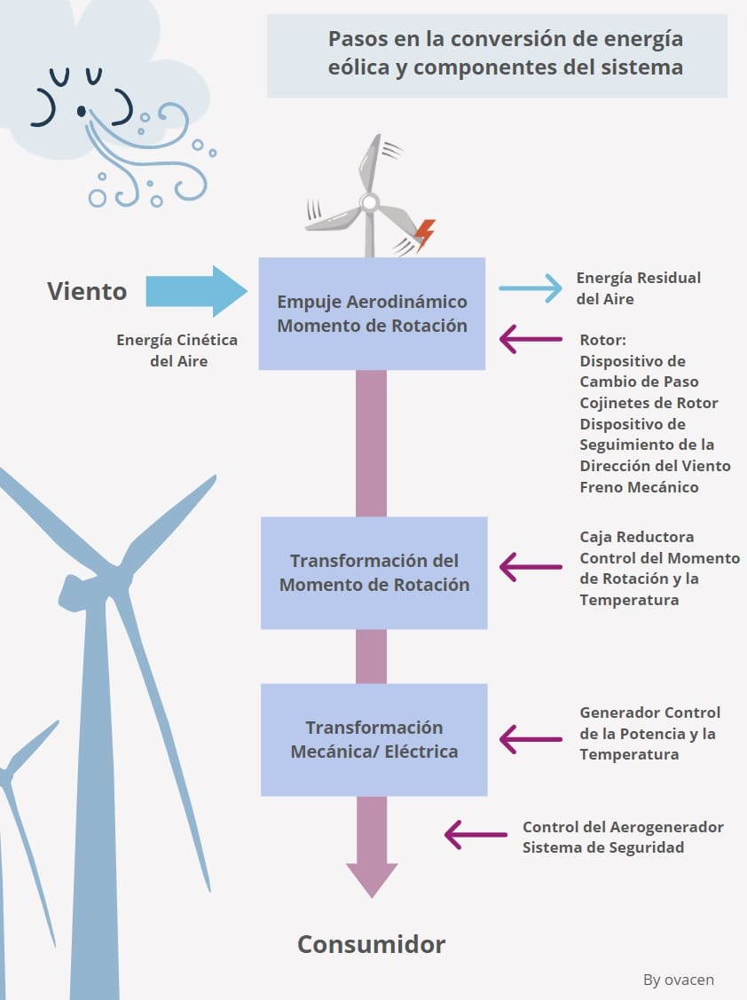

18 de junio del 2026
| Inicio | Energía Solar | Energía Eólica | Energía Hidráulica | Beneficios | Mis datos |

| ¿QUÉ ES LA ENERGÍA EÓLICA? |
|---|
| La energía eólica es una fuente de energía renovable que aprovecha la fuerza del viento para producir electricidad. Es una de las energías limpias más utilizadas en el mundo y contribuye a reducir la contaminación ambiental. |
| ¿CÓMO FUNCIONA? |
|---|
| La energía eólica se obtiene mediante aerogeneradores, también conocidos como molinos de viento. Cuando el viento mueve sus aspas, se activa un generador que transforma la energía del movimiento en electricidad. |

| VENTAJAS Y DESVENTAJAS | |
|---|---|
| Ventajas | Desventajas |
|
|
| DATOS GENERALES | |
|---|---|
| Fuente | Viento 🌬️ |
| Tipo | Energía Renovable |
| Contaminación | Muy baja |
| Uso principal | Producción de electricidad |

| DATO INTERESANTE |
|---|
| Un solo aerogenerador moderno puede generar suficiente electricidad para abastecer cientos de hogares. Por ello, la energía eólica es una de las alternativas más prometedoras para un futuro sostenible. |
| ENLACE DE INTERÉS |
|---|
| 🌬️ Aprende más sobre la energía eólica aquí |
© 2021. Derechos reservados.
Elaborado por: Ariadne Garay Aguilar
Matrícula: 2320032022
Grupo: 6102
Plantel: CEMSaD Durango